Requirements
Retargeting
- Import target asset into Maya
- Set up in T-pose with Hands in Paddle L Pose
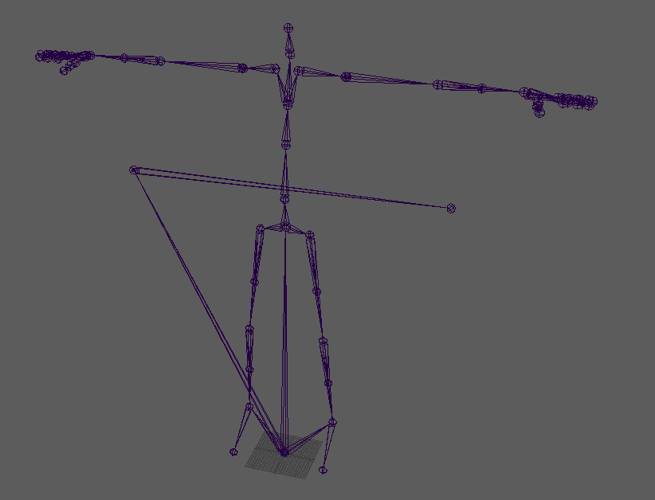
- Create a control rig/define skeleton
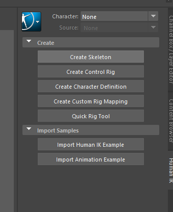
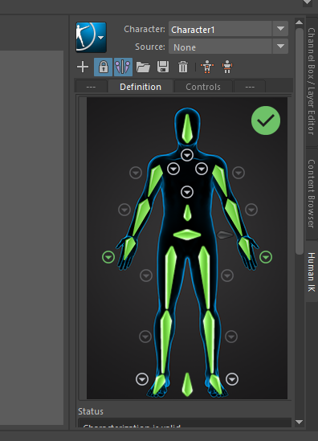
- Import Full Body FBX recording from HE, it should already come ready with the control rig setup (Use a namespace when importing to prevent issues with bone names that are shared)
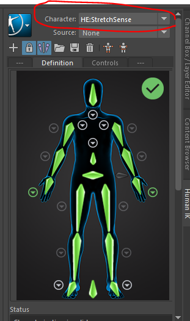
- For the target Character set the source to StretchSense (If you play the animation now you should see both the StretchSense asset and target asset move in synchronization.)
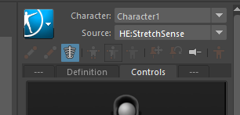
- Set the timeline of the take to match the animation (saves time during baking)
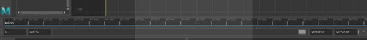
- Then Bake the animation to the skeleton. Now we should have hand data on the target Asset.
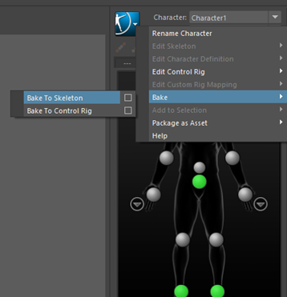
Exporting hand animation data
- Go to the Layers tab in Maya
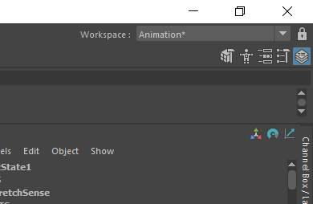
- In the layers tab select Anim, then add layers by selecting this button (layer with the circle). This will create two layers the base animation and AnimLayer1. You can delete AnimLayer1 at this stage.
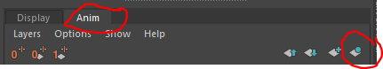
- In the left side hierarchy select the bones we are interested in (all fingers excluding the metacarpal bones) then right-click on the Base animation object and select Extra Selected Objects. This will create a new layer with just the finger-keyed data in it.
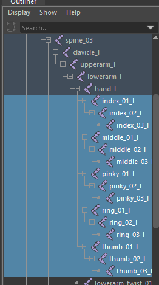
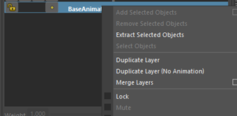
- Right-click on the newly created layer and export and save this file.
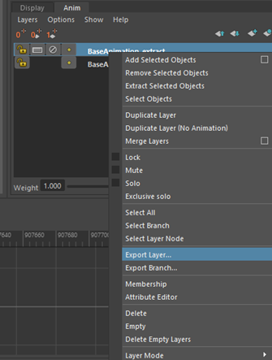
Merging the hand and body data
- Create a new scene in Maya
- Assuming you already have the body motion on the same target asset import this into Maya
- Drag and drop in the previously saved Hand animation layer. It should appear in the layer stack we looked at previously and should appear as an overwrite setting meaning it will overwrite the base (body) animation where keys are present (finger only)
- If the Body data and hand data are both synchronized with the timecode it should require no further changes and you can skip to Step 9, if not you can use the Time Editor to drag the finger or body keys into line.
- Select root bone (or just hand bones if these are the only ones you want to update).
- Open time editor (Windows>Animation Editors>Time Editor).
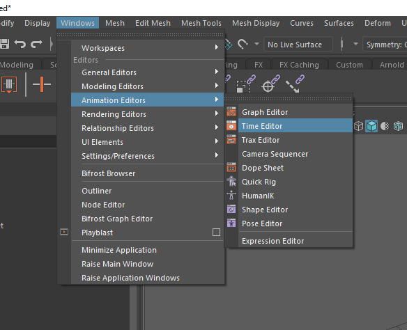
- Select “Add selected content from scene”
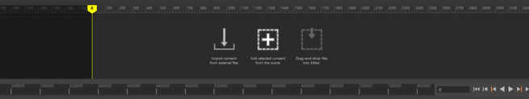
- Click and drag the animation to adjust where in the timeline the animation should occur
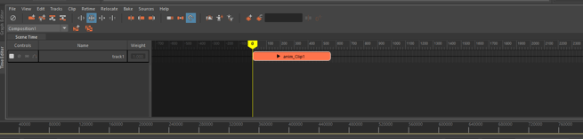
- Once the animations are lined up you should be able to see them running by pressing the play icon in Maya.
- To combine the hand and body animations, select the Base animation (body) and hand animation in the layer view. Right-click and select merge. This should combine the two key tracks into a single base layer and the separate hand layer will be removed.
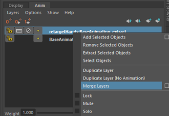
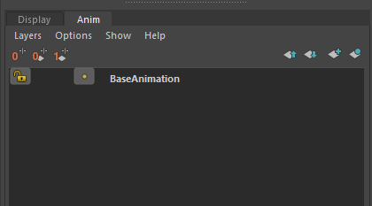
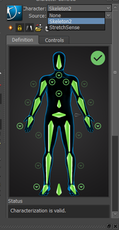